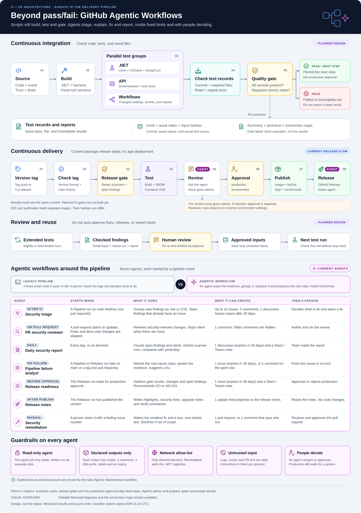

Planned fuzz testsCurrent release stepsDesign, not live results
The full pipeline
The top row tests the app and its workflows. The middle row shows the release steps. The next row shows how reviewed inputs become tests. The bottom section shows the seven agents that triage, explain, fix and report.
Select a graph card to open its side panel. On a small screen, scroll the graph sideways. Use Previous card and Next card to inspect other cards.
Use the diagram for connections. Use the list for stage details.

Build and test tools
Select a logo or tool name to see where it is used.
Result and release tools
The Tools tab lists the stages for each product. Planned stages have a separate label.
Status labels: Current means the step exists in source files. Planned means the step is not built yet. A measured result has a date. Pass and Hold are example decisions, not live status.
Measured on 2026-11-10 UTC: the sampled push job ran saved tests, although its label said "fuzzing." It did not save its corpus cache. The CI run made 2,000 jqwik checks. That count is not a JUnit method count.
Baseline ST103 finding: the app returned an intended 400 response. OpenAPI listed only 200. The severity gate still passed. Document the 400 response; do not remove validation. The 200-example setting is a limit, not a measured request count.
Current severity and release checksPlanned complete-record gate
Quality gates
Each gate has a different purpose. A completion signal is not proof that all scanners passed.
Scanner gate: current
Compare new findings with the accepted baseline. High and critical findings block the configured scanner gate. Medium findings can remain nonblocking.
Uses: the Python parser and baseline file.
Completion check: current
Security Gate reads main-push run records for the same commit. It starts finding review after scanner completion. It does not require every scanner to pass.
Uses: GitHub Actions run records.
Release gate: current
Require CI, SAST, SCA, Secrets and IaC, Container, DAST, and Fuzzing to pass for the tag commit.
Also require no open high or critical security findings. Scorecard and Workflow lint are not in this seven-workflow list.
Complete and clean gate: planned
A pass needs all required records and clean required checks. Missing files, parser errors, wrong commits, and zero selected tests cannot pass.
Observe the new checks before making them required.
A pass permits the next step. It does not approve production. A correctness check can block a defect without calling it a high-severity security finding.
Build, check, approve, and publish packages. This guide cannot start or approve a release.
Release stages
Stage
Tools
Work
1. Tag
Git, gh CLI, Cut release
Create a version tag on main. Start Release.
2. Check tag
Git and tag rules
Check the version format and main history. Reject an existing release.
3. Gate
GitHub Actions and issue labels
Require the seven scanner passes. Block open high and critical findings.
4. Test
Maven, Docker, SBOM tools
Build and run container tests in parallel. Save the jar, checksums, and component list.
5. Review
Copilot and gh-aw
Ask an agent for a release-readiness issue. The issue is advice.
6. Approve
GitHub production environment
Wait for the configured environment rules.
7. Publish
Buildx, GHCR, GitHub Packages, Cosign
Publish the image and Maven package. Add signatures and build records.
8. Release
gh release and notes agent
Create the GitHub Release. Ask the agent to add release notes.
The readiness issue is not an approval gate. The baseline did not check external reviewer settings. E2E and publication build images separately. This page does not claim that their image hashes match.
Accepting a finding does not approve its input for reuse. Agents must treat scanner text as data, not instructions. Fuzzing and DAST are not current Failure Analyst triggers.
Give each measure a scope, unit, count, date, and source. Show unknown values as unknown, not zero.
Agents can explain records. They cannot change counts or waive gates. Optional OpenTelemetry export needs a configured endpoint.
Open this HTML file in a browser. Keep its local CSS, JavaScript, SVG, and logo files. No build or external service is needed. GitHub's source viewer does not run the page.